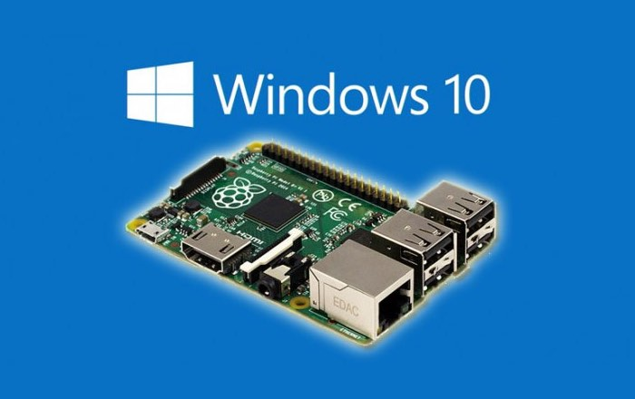
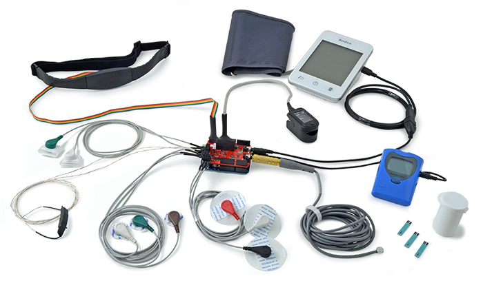
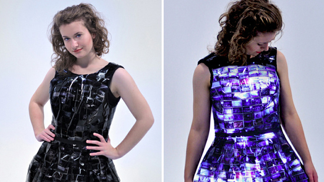
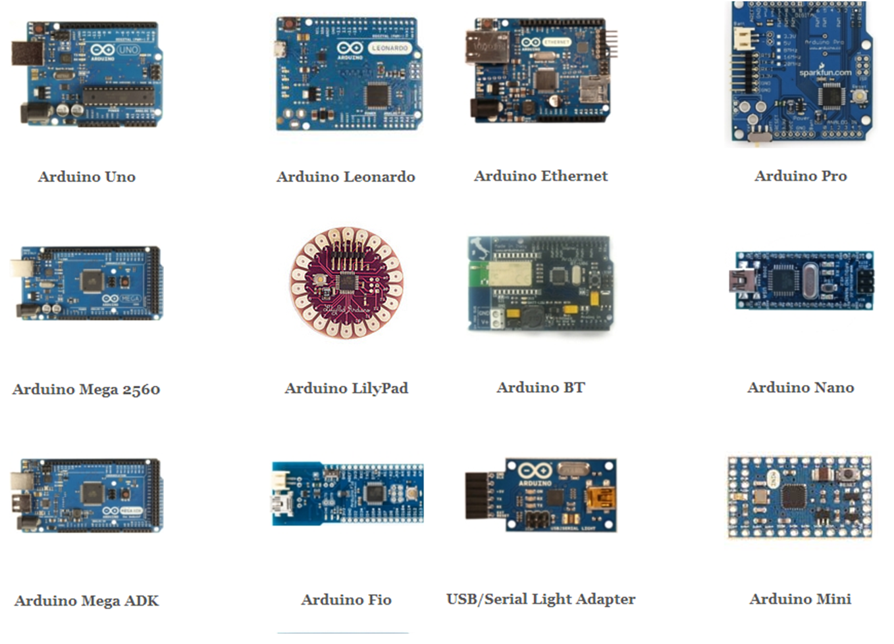

Curiosidades
O Arduino foi para o espaço!
Foi enviado ao espaço um projeto feito com o arduino, o projeto tinha o objetivo de fotografar a terra, mas ele não durou muito tempo, infelizmente ele foi destruído por uma tempestade cósmica, porém esse feito já é um grande avanço e orgulho para a comunidade.
A Arduino e a Microsoft estão se unindo para tornar o Windows 10 o primeiro sistema operacional certificado para a plataforma

A Microsoft diz que será possível combinar os poderes do hardware Arduino com o software Windows em uma sinergia que vai permitir às fabricantes criar vários dispositivos legais e baratos — projetos que podem envolver GPS, telas sensíveis ao toque, reconhecimento de voz, processamento de imagem, áudio avançado, e assim por diante.
Arduino e medicina

A plataforma de prototipagem eletrônica Arduino, não importante exclusivamente apenas para o setor de robótica e automação residencial, mas sim para a Medicina que desenvolve diversos projetos utilizando a placa livre.
Atualmente, o Arduino é muito utilizado para o desenvolvimento de braços e pernas robóticas, utilizando dos mais avançados recursos tecnológicos como por exemplo sensores para ler pulsos elétricos do cérebro, que ajuda a comandar o equipamento através do pensamento.
Fizemos algumas pesquisas e descobrimos que a utilização do equipamento para a Medicina vai muito além de pernas e braços robóticos, mas também de projetos que envolvem o coração, a saúde e o bem-estar das pessoas.
Arduino e moda

Entre telas flexíveis e retro iluminadas surge o design do vestido criado por Emily Steel. A roupa consiste em um desenho coberto por slides velhos, iluminadas com luzes LEDs controladas a partir de um dispositivo Lilypad Arduino. De acordo com a luz ambiente que incide sobre o desenho, seus sensores de luz incrementam ou atenuam a luminosidade da peça, conseguindo um efeito visual interessante sobe a tela que cobre o vestido. Os Lilypad Arduino são placas compostas por um micro controlador, desenhadas, especificamente, para o mercado têxtil. Foram desenhadas por Leah Bueckley e SparkFun Electronics e possuem uma infinita gama de acessórios para potencializar seu funcionamento.
Modelos Arduino

Quem vai comprar uma placa Arduino geralmente se sente um pouco perdido devido ao grande número de tipos de Arduino e funções disponíveis. Entre placas Arduino Uno, Mega, Leonardo, Due, etc, são tantas informações sobre micro controladores, portas, conexões e memória, que fica complicado escolher o modelo mais adequado às suas necessidades.